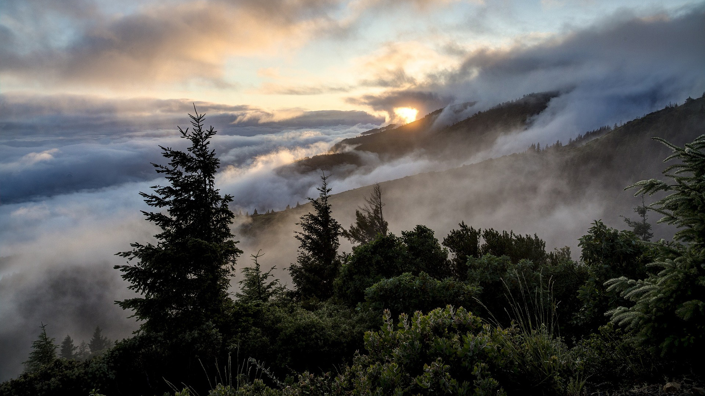
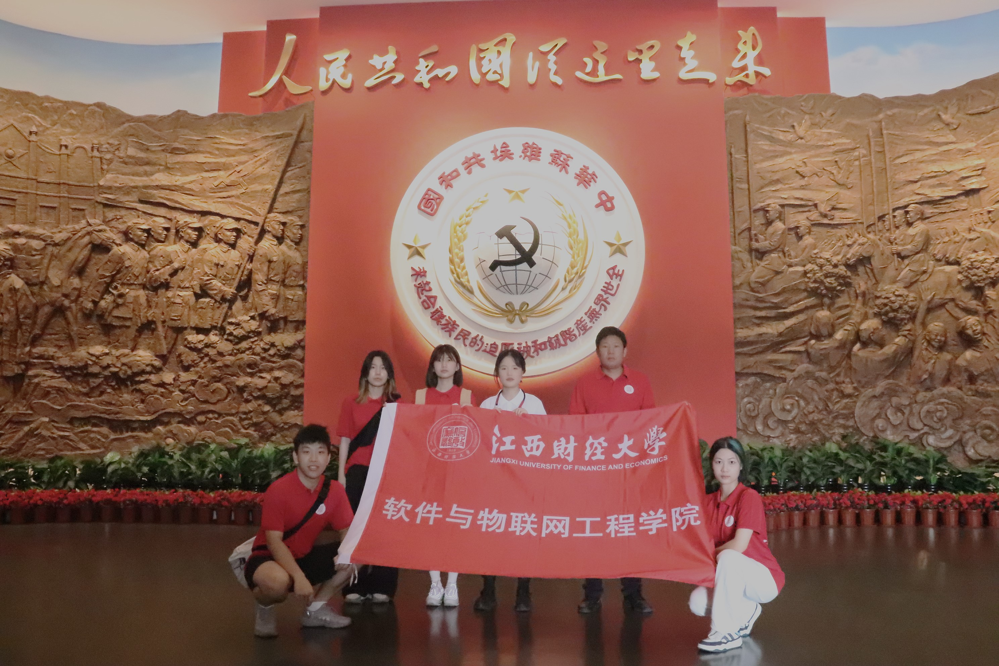

中央革命根据地历史博物馆
中央革命根据地历史博物馆，位于江西省瑞金市苏维埃纪念园内，是一座承载着中国革命重要历史记忆的博物馆。它不仅是对土地革命战争时期中国共产党及其领袖毛泽东、朱德、周恩来 等老一辈无产阶级革命家直接领导创建中央革命根据地和中华苏维埃共和国历史的纪念，也是全国首批百个爱国主义教育示范基地之一。
高校红色走读团队于苏维埃纪念园内合影
“人民共和国从这里走来”。想了解中央革命根据地和中华苏维埃共和国的历史，位于瑞金市象湖镇龙珠路1号的中央革命根据地历史博物馆值得参观
博物馆外建筑雄伟壮观，大型花岗岩浮雕上刻画了24位为中华苏维埃共和国创建作出卓越贡献的领导人形象，他们身姿挺拔、慷慨激昂，让人也不由跟着振奋起来
高校红色走读团队于中央革命根据地历史博物馆内合影

博物馆馆藏文物达一万多件，其中国家一级文物有七十多件，二级文物达两百多件。
这些文物涵盖了各种类型，如文件、证书、武器、生活用品等。游客可通过一件件文物感受百年前的峥嵘岁月
在苏区颁布的政令章程，出版的书籍，发行的报纸……一件件实物再现了苏区群众当时的工作生活和艰苦卓绝的反“围剿”斗争
馆内更是有众多生动的雕像、蜡像，让人们仿佛穿越时光，回到了那个战火纷飞的年代，身临其境的感受到了中国共产党战士革命的日常生活
红军战士欢庆胜利雕像

列宁小学门前军民情深蜡像
中央革命根据地历史博物馆，如同一本厚重的历史书，记录着过去的辉煌与沧桑，也启迪着未来的希望与梦想。在这里， 历史的尘埃被轻轻拂去，革命的光辉得以永恒闪耀。它将继续以其独特的魅力和深远的意义，吸引着无数游客前来参观学习， 成为传承红色基因、弘扬革命精神的重要阵地。让我们共同铭记历史，不忘初心，砥砺前行，在新时代的征程中续写更加辉煌的篇章。